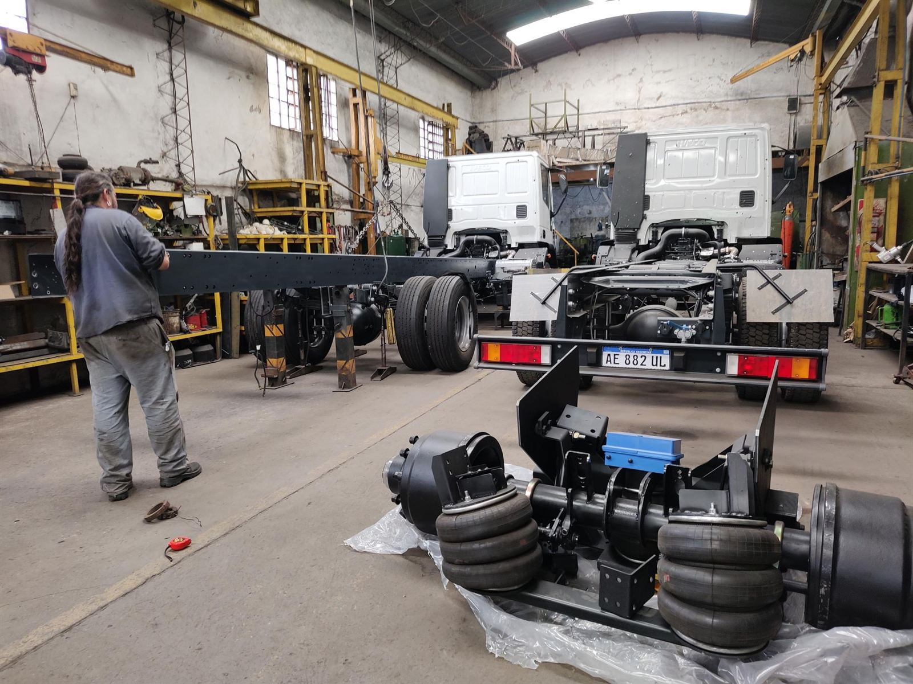
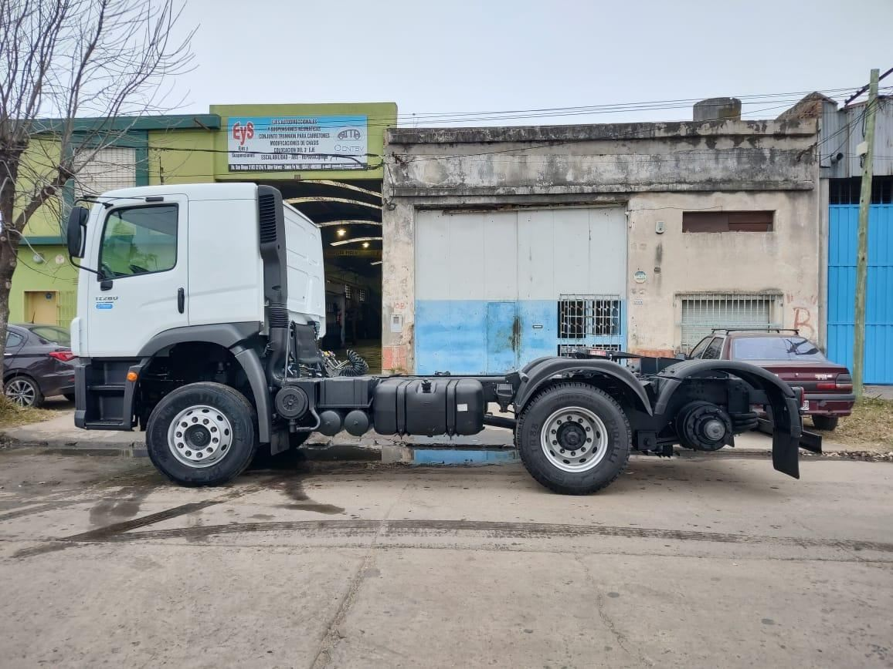

Colocación de 3er eje
Tercer eje neumático para tractores y chasis, con alargue y refuerzo de chasis, reubicación del plato de arrastre y homologación correspondiente.
Ver más sobre tercer eje
Villa Gobernador Gálvez · Santa Fe · Desde 2005
Modificación y reparación de vehículos para cargas. Contamos con la capacidad y la habilitación para realizar las modificaciones que su unidad necesite.
Años de trayectoria
Trocha máxima fabricada
Giro de ejes autodireccionales
Habilitaciones nacionales
Qué hacemos
Fabricamos, modificamos y certificamos. Todo el proceso en un mismo taller, con la documentación que su unidad necesita para circular.
Tercer eje neumático para tractores y chasis, con alargue y refuerzo de chasis, reubicación del plato de arrastre y homologación correspondiente.
Ver más sobre tercer ejeAlargue y modificación de chasis en zona delantera y trasera para aumentar la capacidad de carga, con reubicación del tren rodante.
Ver más sobre escalabilidadEjes autodireccionales, trunnion mecánicos y neumáticos, suspensiones neumáticas y trenes rodantes agrícolas fabricados a medida.
Ver ejes autodireccionalesInstalación de sistemas de freno ABS con registros automáticos, cumpliendo la normativa vigente para unidades de transporte de carga.
Ver más sobre freno ABSConversión de unidad chasis a tractor: cambio de paso, acortado a medidas estándar y colocación de plato de arrastre homologado.
Ver más sobre la conversiónAdaptación y colocación de carrocerías con anclajes y bulonería correspondiente, y modificación de semirremolques con suspensión direccional.
Ver más sobre carroceríasNuestro taller cuenta con las habilitaciones y certificaciones necesarias por parte de CENT, CNTSV y AITA, lo que garantiza la calidad y seguridad de nuestros trabajos de reparación y modificación en unidades de carga.
Consultar por su unidadFabricación propia
Diseñamos y fabricamos conjuntos completos para semirremolques, carretones y maquinaria agrícola. Trabajos realizados a pedido según la aplicación de cada cliente.
Carretones
Trocha variable hasta 2.500 mm, con suspensión neumática con izaje. Utilizados preferentemente cuando se dispone de poca altura desde la parte interior de la viga al piso.
Semirremolques
Los ejes de puntas móviles permiten un radio de giro de hasta 19°, mientras que con otras opciones permiten 11°. Fabricación adaptada a cada tipo de unidad.
Agrícola
Desarrollado para los casos en que no se dispone de aire comprimido en el vehículo tractor. Aplicado a la industria agrícola, permite el mismo giro que los modelos neumáticos.
Alta carga
Trunnion balancín doble y trunnion neumático simple, utilizados en carretones con capacidad de carga elevada. Desarrollo adoptado inicialmente por la industria minera de Chile.
Portfolio
Cada unidad que sale del taller lleva la documentación y las homologaciones necesarias. Estos son algunos de nuestros trabajos.
Cliente Katerynicz
Alargue y modificación de chasis en zona delantera y trasera, para aumentar la capacidad de carga en el tanque. Reubicación del tren rodante. Colocación de frenos ABS. Cambio de paragolpe homologado. Colocación de guardaciclista homologado. Cambio de chapón y perno de arrastre homologado. Unidad escalable, aumento de la capacidad de carga.
Cliente Rivosecchi
Alargue de chasis. Colocación de 3er eje neumático. Reubicación del plato de arrastre. Unidad tractora.
Cliente Germat S.R.L.
Alargue de chasis. Colocación de 3er eje neumático. Refuerzo exterior completo (envainado). Unidad preparada para colocación de carrocería de hidrogrúa.
Cliente SL Natural S.R.L.
Cambio de unidad chasis a tractor. Se modificó la distancia entre ejes (cambio de paso) y se acortó el chasis a medidas estándar de tractor, colocando plato de arrastre homologado.
Cliente particular
Se adaptó y colocó la carrocería con los anclajes y la bulonería correspondientes.
Cliente Guagliano
Modificación del chasis con colocación de suspensión neumática direccional. Aro bolita.
Cliente Katerynicz
Colocación de sistema de freno ABS con los registros automáticos.
Quiénes somos

Con una trayectoria que se remonta a los primeros años del presente siglo, nos enorgullecemos de ser la continuación de la prestigiosa fabricación de ejes autodireccionales y suspensiones neumáticas que antes llevaba a cabo Tafor S.A. Desde el año 2005 nuestra sede está estratégicamente ubicada en Bv. San Diego 2103, en la ciudad de Villa Gobernador Gálvez.
Aunque inicialmente nos destacamos por esos productos, hemos evolucionado para desarrollar conjuntos de ejes autodireccionales y suspensiones neumáticas para carretones, llegando a fabricar ejes de hasta 2.580 mm de trocha. También incursionamos en el desarrollo de ejes autodireccionales para la industria agrícola, con sistemas de centrado a resortes y rodantes especiales para diversas aplicaciones.
Continuando con nuestra constante búsqueda de innovación, desarrollamos ejes trunnion dobles mecánicos y simples neumáticos, ideales para carretones de gran envergadura y capacidad de carga, adoptados inicialmente por la industria minera de Chile.
En la actualidad seguimos fabricando todos estos productos, además de haber ampliado nuestra oferta con manotas, balancines fundidos y de chapa, tensores fijos y regulables, pernos de balancín con temple por inducción y mucho más, en una extensa variedad de opciones.
Continuadores de la fabricación de ejes autodireccionales y suspensiones neumáticas de Tafor S.A.
Taller en Bv. San Diego 2103, Villa Gobernador Gálvez, Santa Fe.
Desarrollo de conjuntos para carretones, con ejes de hasta 2.580 mm de trocha.
Ejes con centrado a resortes para el agro y ejes trunnion para minería y gran porte.
Fabricación integral de componentes y modificaciones certificadas por CENT, CNTSV y AITA.
Nos eligen
Contacto
Contanos qué necesita tu unidad y te respondemos a la brevedad. También podés escribirnos directamente por WhatsApp.
Ubicación
EyS — Ejes y Suspensiones se encuentra en Bv. San Diego 2103, Villa Gobernador Gálvez, cerca de una intersección principal, lo que lo hace fácilmente accesible desde cualquier parte de la ciudad. Si buscás expertos en sistemas de suspensión y ejes para tu vehículo, no dudes en visitarnos.
Escribinos y te asesoramos sobre la mejor solución, con la documentación y homologaciones incluidas.